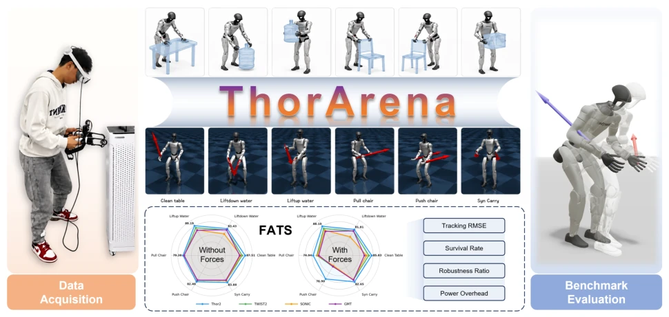
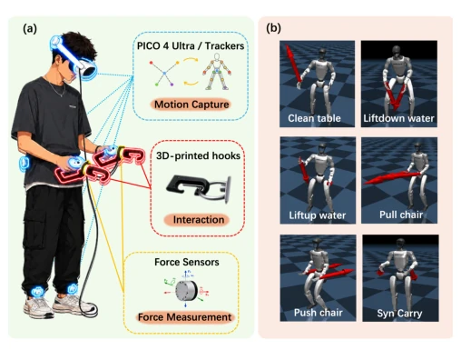
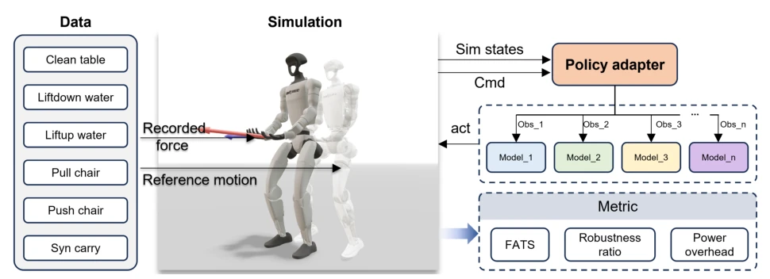
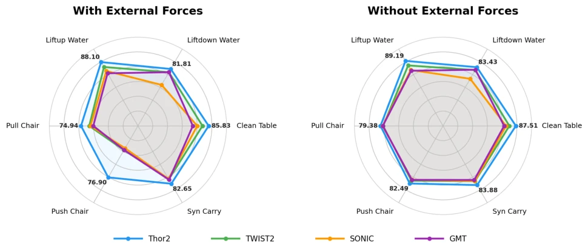
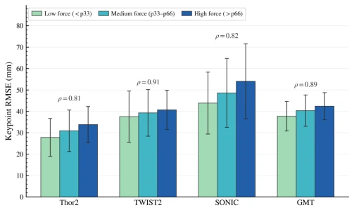
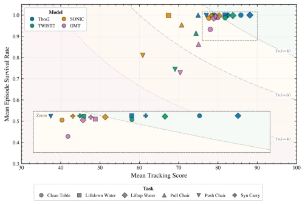

This paper finally brings "force" back into humanoid robot evaluation. Previously, everyone only cared whether the robot's posture resembled a human, but forgot how much force the hand exerts when pushing a table. ThorArena conducted a "force-aware" evaluation, recording the force of humans pushing chairs and feeding it to the simulator. Although the tasks remain the same (wiping tables, moving chairs), at least it no longer pretends that robots are dancing in a vacuum. However, can replaying forces in simulation truly represent real physical contact? This point remains a question mark. In short, for the "paperwork" faction that only runs interference-free trajectories, this is a resounding slap in the face. It reveals the false prosperity under no-external-force evaluation, but also exposes the gap between simulation and reality.
Humanoid robots need to perform physical labor; merely knowing how to pose is not enough, they must also understand force application. Existing datasets and benchmarks mostly focus on kinematic trajectories, such as SMPL [16] or AMASS [17] which mainly focus on human modeling, while humanoid datasets like Humanplus [2] or Omnih2o [3] rarely record interaction forces synchronously. Existing evaluation protocols [24], [25] often treat external forces as implicit disturbances, resulting in evaluation results that fail to reflect stability under real physical contact. If a robot only runs well without interference and falls when pushed, then this control strategy is a "greenhouse flower". ThorArena aims to fill this gap by synchronizing motion-force demonstrations to evaluate robustness under force perception.

Fig. 1. Overview of ThorArena. ThorArena integrates real-world motion–force demonstration collection, synchronized interaction-force replay in simulation, and standardized evaluation of humanoid whole-body control policies. The acquisition system records synchronized whole-body human motion and forces exerted through both hands across six representative physical interaction tasks. The captured motions are retargeted to humanoid reference trajectories, while the corresponding recorded forces are synchronously replayed at the robot hands during simulation. Policies are evaluated under matched force and no-force settings using FATS and complementary diagnostic metrics, including tracking RMSE, survival rate, robustness ratio, and power overhead.

Fig. 2. Real-world motion–force acquisition system and task set. (a) The operator uses a VR-based system for whole-body motion capture, while two force sensors coupled with 3D-printed hooks record the forces exerted through both hands and provide stable attachment points for object interaction. (b) Retargeted humanoid motions for the six force-interaction tasks: Clean Table (table wiping), Liftdown Water (lowering and placing a water container), Liftup Water (lifting a water container), Pull Chair (pulling heavy objects), Push Chair (pushing heavy objects), and Syn Carry (cooperative carrying). Red arrows indicate the dominant interaction- force directions.
ThorArena consists of three parts. First is data collection, using VR headsets and force sensors to record human hand forces and full-body motion, covering 6 tasks such as wiping tables, moving water, pushing/pulling chairs, totaling 360 sequences. Second is metric design, proposing FATS (Force-Aware Tracking Score), combining keypoint error, survival rate, and force intensity stratification (low/medium/high force), plus robustness ratio (rho) and power consumption (eta). Finally is the evaluation protocol, replaying recorded real forces in simulation, evaluating different control strategies through a unified policy adapter interface. This is like putting "force feedback gloves" on the robot, forcing it to experience real physical interference in simulation, rather than just fixated on joint angles. Specifically, force sensors are coupled with 3D printed hooks to ensure stable force measurement; In the FATS formula, weights are biased towards high-force regions, emphasizing performance under extreme conditions; The adapter design decouples the benchmark mechanism from model-specific observations, allowing different strategies to compete fairly under the same force replay protocol.

Fig. 3. ThorArena benchmark evaluation pipeline. The benchmark replays retargeted reference motions and recorded two-hand forces in simulation, evaluates different whole-body control policies through a unified policy adapter, and reports FATS and complementary diagnostic metrics under force and no-force settings.
Compared four strategies: Thor2, TWIST2 [6], GMT [14], and SONIC [15] on 6 tasks. Experiments were divided into two settings: with external force and without external force. Results show that without external force, the gap between strategies is not large, but after adding force replay, performance divergence is obvious. Thor2 scored highest on FATS (81.71), survival rate close to 1.0. Especially in the chair pushing task, survival rates of other strategies plummeted. This indicates that traditional no-force evaluation masks robustness defects of strategies under force. Although SONIC has low power consumption, it has large tracking error and tends to comply with disturbances rather than resist them.

Fig. 4. Task-level FATS comparison with and without external forces.

Fig. 6. Keypoint tracking errors across low-force and high-force segments.

Fig. 5. Tracking score and survival distribution under external forces.